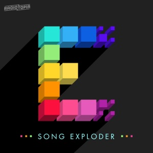
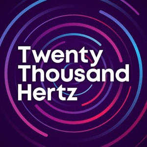
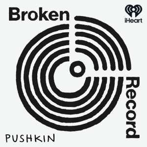
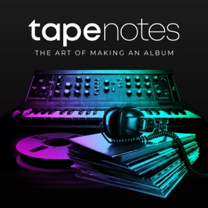
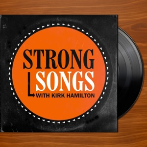
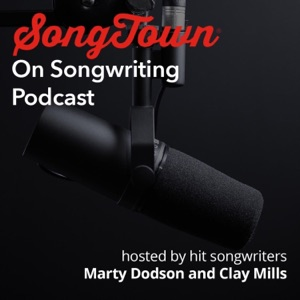

17 Songwriting-Podcasts für den Arbeitsweg
Die meisten Podcast-Listen ignorieren genau das, woran es am Ende hängt, ob du wirklich zuhörst: wie lang die Folgen sind. Eine großartige Zwei-Stunden-Show bringt dir auf einer 20-minütigen Bahnfahrt wenig.
Deshalb ist hier nach Länge sortiert, und überall kommen noch neue Folgen — bis auf eine Sendung am Ende, deren Archiv sich trotzdem lohnt.
Kurze Fahrt
Unter 30 Minuten. Eine Fahrt, eine Folge, fertig.

Song Exploder
Hrishikesh Hirway
Ein Artist zerlegt einen eigenen Song und spielt die einzelnen Spuren vor — die Gesangsspur ganz nackt, die Synth-Linie, die im Mix untergegangen ist, das Demo, das nie jemand gehört hat. Hirway schneidet seine eigenen Fragen komplett raus, dadurch klingt es, als würde dich der Artist allein durch den Song führen.
Dreizehn Jahre und über 300 Folgen — das Archiv ist entsprechend riesig. Die am besten gemachte Sendung auf dieser Liste und die, die man am leichtesten jedem empfiehlt.
Fang an mit — The Postal Service, „The District Sleeps Alone Tonight“ — die allererste Folge, und immer noch die, auf die Neulinge geschickt werden. Oder Robyns „Honey“.

Story-First Songwriting
Melanie Naumann
Die eine Sendung, in der es wirklich um Songtexte geht — seltener, als es sein sollte, weil die meisten Musikpodcasts früher oder später bei Produktion oder Geschichte landen. Jede Folge nimmt den Text eines echten Songs auseinander und klärt, warum er trifft oder eben nicht.
Kleiner und weniger glattpoliert als die großen Shows. Aber wenn dein Problem die Worte sind und nicht die Sounds, ist das hier das Nützlichste auf der Liste.
Fang an mit — der Analyse von „Remedy“, darüber, warum vages Schreiben Hörer verliert.

Twenty Thousand Hertz
Dallas Taylor
Es geht um Klang, nicht ums Songwriting — das Netflix-ta-dum, warum eine bestimmte Snare nach 1985 klingt, wie der Song für eine Filmszene ausgesucht wird. Songwriting-Themen kommen nur ab und zu, aber die Sendung verändert, wie du deine eigenen Mixe hörst.
Gerade zehn Jahre alt geworden, wunderschön produziert, und die Folgen haben exakt Arbeitsweg-Länge.
Normaler Arbeitsweg
Fünfunddreißig bis fünfundfünfzig Minuten. Für die meisten der ideale Bereich.

Sodajerker On Songwriting
Simon Barber & Brian O'Connor
Wenn du nur eine einzige Sendung abonnierst, dann diese. Die Hosts sind selbst ein arbeitendes Songwriting-Duo, und man merkt es — sie stellen Fragen, auf die ein Journalist gar nicht käme, und genau deshalb antworten die Gäste anders.
Diesen Monat werden es fünfzehn Jahre und rund 330 Folgen. Die Gästeliste ist absurd: McCartney, Nile Rodgers, Suzanne Vega, Brandon Flowers.
Fang an mit — Folge 122, Paul McCartney — aufgenommen am LIPA und wirklich erhellend dazu, wie er Songs aus einzelnen Teilen zusammensetzt.

Switched On Pop
Nate Sloan & Charlie Harding
Ein Musikwissenschaftler und ein Songwriter zerlegen Popsongs und erklären, was darin eigentlich passiert. Noten lesen musst du dafür nicht, das ist der ganze Trick — warum ein Refrain abhebt, zeigen sie dir am Song selbst statt am Notenblatt.
Inzwischen über 500 Folgen. Das Buch zur Sendung steht auf so ziemlich jeder Songwriting-Leseliste, auch auf unserer.

Hit Parade
Chris Molanphy
Chartgeschichte, richtig erzählt. Molanphy kennt das Billboard-Archiv besser als fast jeder andere und beantwortet damit Fragen wie: Warum hing ein Song neun Wochen auf Platz zwei fest? Wie hat ein Genre klammheimlich die Charts übernommen?
Es geht darum, warum Songs Erfolg haben, nicht darum, wie sie geschrieben werden — Kontext statt Handwerk, und genau deshalb nützlich.

Dissect
Cole Cuchna
Ein Album pro Staffel, ein Song pro Folge, Zeile für Zeile und Akkord für Akkord auseinandergenommen. Näher an einem Uni-Seminar als an einer Plauderrunde, und es lohnt sich, der Reihe nach zu hören.
Dieses Jahr zehn Jahre alt. Überwiegend Hip-Hop, aber nicht nur.
Fang an mit — Staffel eins, Folge eins — Kendrick Lamars To Pimp a Butterfly. Nicht vorspulen, die Staffeln bauen aufeinander auf.

Sound Opinions
Jim DeRogatis & Greg Kot
Zwei Kritiker streiten seit einundzwanzig Jahren und über 1.400 Folgen über Platten. Besprechungen, Interviews, Themenlisten und ab und zu ein echter Krach.
Kritik statt Handwerk — aber zu hören, wie jemand präzise auf den Punkt bringt, warum etwas funktioniert, ist für sich genommen lehrreich.

Broken Record
Rick Rubin, Malcolm Gladwell, Justin Richmond & Bruce Headlam
„Liner Notes für das digitale Zeitalter“ — lange Gespräche mit Musikern, oft von Rubin selbst geführt, der ausgesprochen gut darin ist, Leute Dinge sagen zu lassen, die sie vorher nie gesagt haben.
Ehrliche Einschränkung: Der Takt ist langsamer geworden, und ein großer Teil des aktuellen Feeds sind wiederveröffentlichte alte Folgen. Nimm es als Archiv zum Durchgraben, nicht als wöchentliches Abo.
Fang an mit — John Frusciante, gilt weithin als Rubins offenstes Gespräch in der Sendung. André 3000 und Kenny Beats sind die beiden anderen, die immer genannt werden.
Lange Fahrt
Eine Stunde und mehr. Für Autobahnetappen und richtig schlimmen Stau.

And The Writer Is…
Ross Golan
Die Sendung über Songwriting als Beruf. Golan hat Hits für Ariana Grande, Selena Gomez und Maroon 5 geschrieben und befragt andere Profis zu den Teilen, die niemand romantisiert: Verlagsverträge, Splits, wer wirklich im Raum war, wie ein Song am Ende aufgenommen wurde.
Wenn du die Branche verstehen willst und nicht das Handwerk, kommt nichts anderes auch nur in die Nähe.

Songcraft: Spotlight on Songwriters
Scott B. Bomar & Paul Duncan
Interviews über ganze Karrieren, die sich meist an einem konkreten Song festmachen. Fast 300 Folgen tief, und die Gäste sind eher Songwriter mit langem Werk als die, die gerade diesen Monat eine Platte draußen haben.
Fang an mit — Bernie Taupin über „Tiny Dancer“. Ein fast perfektes Beispiel für das Format.

Tape Notes
John Kennedy
Die längste Sendung hier und die technischste. Kennedy holt den Artist und seinen Produzenten in denselben Raum und geht durch, wie eine Platte tatsächlich gebaut wurde — welcher Take überlebt hat, womit die Demo-Vocals aufgenommen wurden, warum der Fehler drinblieb.
Wenn du in einer DAW arbeitest, ist das deine Sendung. Wenn nicht, ist es vielleicht mehr Detail, als du hören willst.
Fang an mit — Giles Martin über die Rubber Soul-Neuauflage.

Strong Songs
Kirk Hamilton
Hamilton zerlegt einen einzelnen Song am Keyboard und spielt die Parts, während er sie erklärt. Die musikalisch versierteste Sendung hier — er verbringt mit Vergnügen zehn Minuten damit, warum ein einziger ausgetauschter Akkord alles verändert.
Das Tempo ist auf etwa monatlich gesunken, aber rund 180 Folgen liegen schon da.
Fang an mit — der neueren Folge zu „Peg“ von Steely Dan — eine gute Kostprobe davon, was er macht.
Wenn du lieber lernen als unterhalten werden willst
Schlicht lehrreich — weniger Erzählung, mehr Technik.

Songwriter Theory
Joseph Vadala
Solo-Folgen übers Handwerk, gezielt für Songwriter, deren Songs „fast großartig“ sind. Praktisch, unglamourös und konkret, wenn es ums Reparieren geht.

SongTown on Songwriting
Clay Mills & Marty Dodson
Zwei Profis aus Nashville über praktische Probleme — woran du merkst, dass ein Song fertig ist, wie du bei einer Melodie wieder in Gang kommst, Umgangsformen beim Co-Writing. Dodson hat Song Building mitgeschrieben, das in unserem Übungs-Post vorkommt.

How To Write Songs
Keppie Coutts & Benny Romalis
Zwei arbeitende Songwriter reden übers Handwerk, zuletzt in Reihen zu Melodie und dazu, was KI für Songwriter tatsächlich bedeutet. Eine junge Sendung mit bisher nur einer Handvoll Folgen — aufgeholt hast du das schnell.
Nur fürs Archiv
Erscheint nicht mehr — lohnt sich aber zum Durchstöbern.

The Trap Set
Joe Wong
Nominell geht es um Schlagzeuger, tatsächlich ist es eine der besten Interviewsendungen, die die Musik hervorgebracht hat. Wong ist ungewöhnlich gut darin, Leute über Scheitern, Zweifel und die Jahre reden zu lassen, in denen nichts lief.
Seit Mitte 2025 nichts Neues, abonnier es also nicht in der Erwartung neuer Folgen. Knapp 400 liegen trotzdem da.
Womit anfangen
- Zwanzig Minuten, und du willst Handwerk — Song Exploder.
- Du schreibst Songtexte und brauchst Hilfe beim Text — Story-First Songwriting.
- Nur ein einziges Abo — Sodajerker.
- Du willst die Musik verstehen, nicht nur die Geschichte — Switched On Pop, und später Strong Songs, wenn du mehr willst.
- Du willst davon leben — And The Writer Is…
- Du nimmst deine Songs auch selbst auf — Tape Notes.
Die Apple-Links führen direkt zur jeweiligen Sendung; die Spotify- und YouTube-Buttons starten eine Suche, weil diese Plattformen ihre URLs öfter umbauen, als gut ist.
Noch ein praktischer Hinweis, weil das hier eine Arbeitsweg-Liste ist. Die Ideen, die dir diese Sendungen geben, kommen genau dann, wenn du fährst oder am Bahnsteig stehst — also im denkbar schlechtesten Moment zum Aufschreiben. Womit auch immer du sie festhältst — Sprachmemo, Notizen-App, Jam Room — hab es bereit, bevor du auf Play drückst. Die Folge wartet die zehn Sekunden.